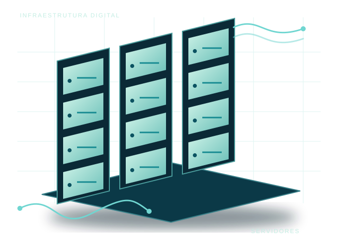
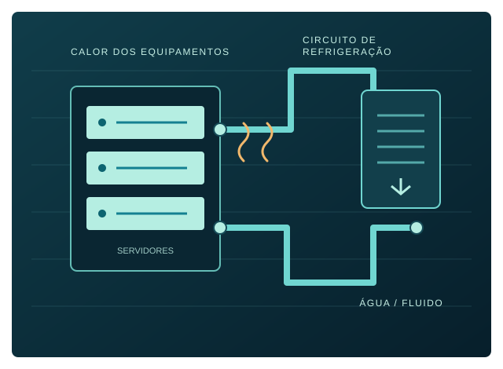
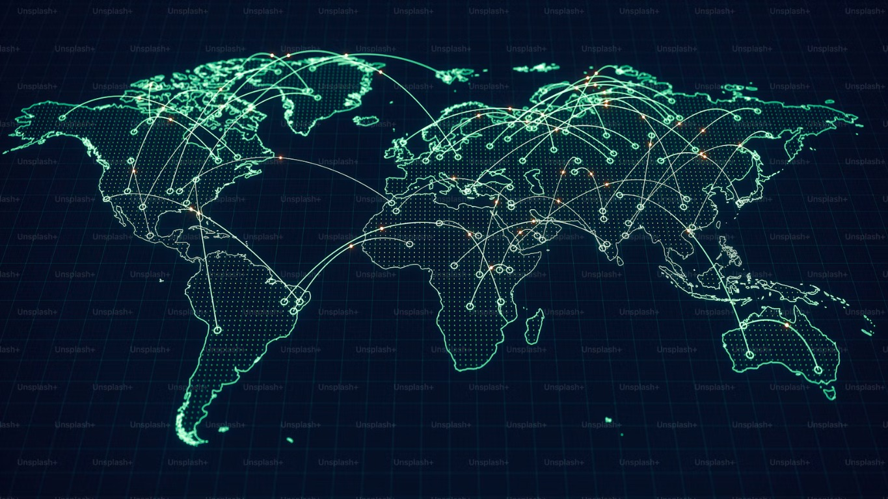

ELETRICIDADE · MUNDO · 2024
415 TWh Consumo estimado de eletricidade dos data centers em 2024.TECNOLOGIA, ÁGUA E MEIO AMBIENTE
O lado invisível
da inteligência
artificial
A IA parece existir apenas na tela. Mas, por trás de cada comando, há estruturas físicas que consomem energia e podem utilizar grandes volumes de água.
Conheça o impacto
O CUSTO DA NUVEM
DESLIZE PARA EXPLORAR ⌄
Uma pergunta para começar: como a expansão do mundo digital pode afetar um recurso essencial à vida?
ENTENDA A INFRAESTRUTURA 01 / 06
O que são
data centers?
Data centers são instalações que armazenam, processam e distribuem grandes quantidades de informações. Eles possuem milhares de servidores que permitem o funcionamento de sites, aplicativos, redes sociais e ferramentas de inteligência artificial.
Esses equipamentos funcionam continuamente e produzem bastante calor. Por isso, precisam de sistemas de refrigeração para evitar o superaquecimento e garantir que continuem funcionando corretamente.
Com o crescimento da inteligência artificial, a necessidade de processamento de dados aumentou, fazendo com que muitos data centers precisem de mais energia e recursos para funcionar.

DE ONDE VEM O CONSUMO? 02 / 06
Por que a IA
usa água?
A água é utilizada principalmente para ajudar a resfriar os equipamentos dos data centers. Como os servidores trabalham constantemente, eles liberam calor e precisam de sistemas de refrigeração.
Em alguns sistemas, a água é utilizada diretamente no resfriamento. Em outros, o consumo acontece indiretamente, durante a produção da energia elétrica utilizada pelos equipamentos.
O treinamento e o funcionamento de modelos de inteligência artificial exigem grande capacidade de processamento. Quanto maior a demanda por esses serviços, maior pode ser a necessidade de infraestrutura, energia e água.
O TAMANHO DA DEMANDA 03 / 06
Os números
por trás da nuvem.
Os dados ajudam a dimensionar o uso de recursos pela infraestrutura digital.
PROJEÇÃO · MUNDO · 2030
945 TWh Consumo anual que os data centers podem alcançar em 2030.ÁGUA DIRETA · EUA · 2023
66 bilhões L Estimativa de consumo direto de água pelos data centers dos Estados Unidos.ÁGUA INDIRETA · EUA · 2023
800 bilhões L Estimativa associada à geração da eletricidade utilizada pelos data centers.CONSUMO DE ELETRICIDADE
2024 × projeção para 2030
2024415 TWh
2030945 TWh
02505007501.000 TWh
Os números apresentados são referentes aos data centers em geral, e não exclusivamente aos utilizados para inteligência artificial. O valor de 2030 é uma projeção da IEA, não um dado já observado. Os valores de água referem-se aos Estados Unidos.
GEOGRAFIA DA INFRAESTRUTURA 04 / 06
Onde estão
os data centers?
Os data centers estão espalhados pelo mundo, mas sua localização depende de fatores como disponibilidade de energia, acesso à água, infraestrutura de internet, clima e proximidade dos usuários.
Países como Estados Unidos, China e membros da União Europeia possuem grandes concentrações dessas instalações.
No Brasil, há uma concentração expressiva de data centers na região Sudeste. A Associação Brasileira de Data Centers registra 110 unidades do tipo colocation e/ou hyperscale nessa região, de um total de 162 unidades mapeadas nas cinco regiões. São Paulo se destaca em capacidade instalada.
A localização é importante porque regiões que já enfrentam problemas de abastecimento podem sofrer ainda mais pressão sobre seus recursos hídricos.
REGIÕES COM PRESENÇA EXPRESSIVA

BRASIL · SUDESTE
São Paulo é um dos principais polos brasileiros de infraestrutura de data centers.
Esquema ilustrativo: não representa a localização exata nem a quantidade de instalações.
CONSEQUÊNCIAS AMBIENTAIS E SOCIAIS 05 / 06
Quando a tecnologia
pressiona a natureza.
O consumo elevado pode gerar diferentes consequências, principalmente em regiões com pouca disponibilidade hídrica.
Menos água disponível
O uso elevado pode aumentar a pressão sobre rios, reservatórios e outras fontes de abastecimento.
Ecossistemas afetados
A retirada de grandes quantidades de água pode prejudicar ambientes naturais e espécies que dependem desses recursos.
Disputa pelo recurso
Empresas e comunidades podem competir pelo acesso à água, principalmente em regiões com escassez.
Desigualdade social
Comunidades próximas podem enfrentar dificuldades se o consumo industrial prejudicar a disponibilidade de água para a população.
E existe outro ponto: a geração de energia elétrica utilizada nessas instalações também pode provocar impactos ambientais, dependendo da fonte de energia.
CAMINHOS POSSÍVEIS 06 / 06
Inovar também é
usar melhor.
Algumas alternativas podem ajudar a reduzir os impactos ambientais dos data centers.
Refrigeração mais eficiente
Desenvolver tecnologias que resfriem os servidores utilizando menos água.
Reutilização da água
Utilizar água de reúso ou água da chuva em processos adequados de refrigeração.
Energia renovável
Ampliar o uso de fontes como energia solar e eólica para diminuir impactos da geração de eletricidade.
Planejamento da localização
Instalar data centers em regiões com infraestrutura suficiente e disponibilidade de recursos hídricos.
Tecnologias mais eficientes
Criar modelos de IA que exijam menos processamento e energia.
PARA CONCLUIR
O futuro digital
também precisa ser sustentável.
A inteligência artificial oferece diversos benefícios para a sociedade, mas seu crescimento também traz desafios ambientais que precisam ser considerados. Os data centers são essenciais para o funcionamento dessas tecnologias e dependem de grandes quantidades de energia e, em determinados sistemas, de água para manter seus equipamentos funcionando.
Por isso, é importante investir em tecnologias mais eficientes, reutilizar recursos naturais e planejar melhor a localização dessas instalações. O desenvolvimento tecnológico deve acontecer de forma responsável, buscando equilibrar inovação, preservação ambiental e qualidade de vida da população.
OCEONTECNOLOGIA AZUL · TURMA 148 · 2026
AGORA É COM VOCÊ
O que você aprendeu?
Responda às cinco perguntas e confira seu resultado.
PERGUNTA 1 DE 5
O que são data centers?
Selecione uma alternativa para continuar.
PARA SABER MAIS
Fontes e referências.
Materiais utilizados como base para os dados e as explicações desta pesquisa.
- International Energy Agency (IEA)Acessar relatório ↗
Energy and AI (2025). Dados globais de consumo de eletricidade dos data centers e projeções para 2030.
- Lawrence Berkeley National LaboratoryLer relatório (PDF) ↗
2024 United States Data Center Energy Usage Report. Estimativas de consumo direto e indireto de água e energia dos data centers nos Estados Unidos.
- Universidade da Califórnia, Riverside — pesquisa acadêmicaLer pesquisa ↗
Making AI Less "Thirsty": Uncovering and Addressing the Secret Water Footprint of AI Models. Estudo sobre a pegada hídrica dos modelos de IA.
- Associação Brasileira de Data Centers (ABDC)Consultar levantamento ↗
Dados sobre a distribuição regional de data centers do tipo colocation e/ou hyperscale: 110 das 162 unidades mapeadas estão no Sudeste; São Paulo se destaca em capacidade instalada.
- Agência Nacional de Águas e Saneamento Básico (ANA)Acessar ANA ↗
Informações institucionais sobre recursos hídricos, gestão e situação da água no Brasil.
Os dados estatísticos foram apresentados com seus recortes geográficos e temporais para evitar comparações incorretas. Consulte os relatórios originais para detalhes metodológicos.
QUEM FEZ A PESQUISA
Grupo Oceon.
Turma 148 · Geografia · 2026
Eduarda Rabatini Souza Martins
Desenvolvimento e montagem do site
Alexandra Lúcia da Silva
Pesquisa e levantamento de informações
Izabella Alibati de Melo
Escolha da paleta de cores e identidade visual
TECNOLOGIA AZUL · OCEON · 2026